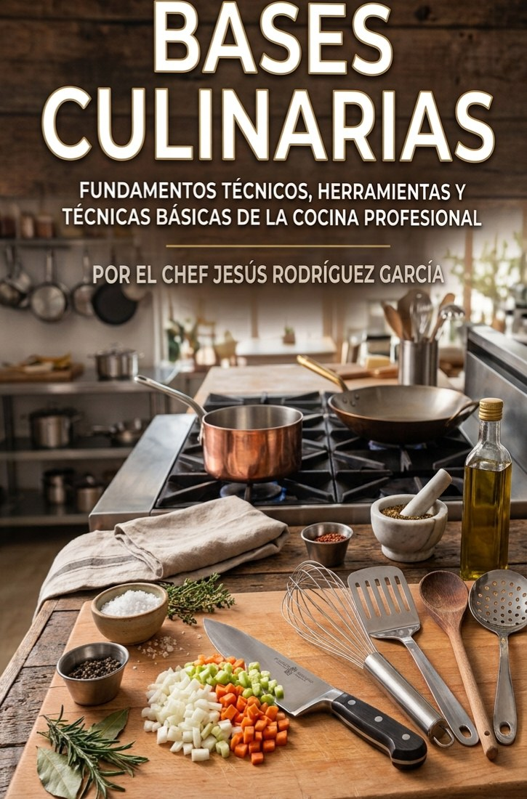

Elige un subtema
Toca cualquier subtema para abrir su contenido, o busca por palabra clave.

Llevo ya varios años frente a un grupo, y en ese tiempo he aprendido que enseñar gastronomía no se trata solo de transmitir procedimientos, se trata de compartir un oficio que se lleva en las manos, en el paladar y, con el tiempo, también en el carácter. Este compendio nace de esa convicción, y de la certeza de que un buen material de apoyo puede hacer la diferencia entre un alumno que memoriza una receta y uno que de verdad comprende por qué esa receta funciona.
Lo que tienes en tus manos —o en tu pantalla— es el resultado de reunir en un solo lugar el fundamento teórico, el conocimiento de la materia prima y el desarrollo práctico de habilidades que, en conjunto, forman la base de cualquier cocinero profesional. No pretende sustituir la experiencia de la cocina en vivo, el calor real de una plancha ni el nerviosismo del primer servicio, pretende ser el mapa que acompañe ese camino, para que cuando llegues a la cocina, llegues con las preguntas correctas ya resueltas y la cabeza libre para concentrarte en lo que solo se aprende haciendo.
Está pensado para los alumnos de la Licenciatura en Artes Culinarias y Negocios Gastronómicos, y refleja años de práctica docente y de experiencia laboral en el campo de la gastronomía y la gestión empresarial en el área de alimentos, además de un compromiso genuino con la formación técnica y profesional de calidad. Cada bloque de este compendio sigue el plan de estudios oficial de la asignatura Bases Culinarias, pero se permite —cuando el tema lo pide— detenerse un poco más, explicar el porqué detrás de una regla, o compartir una anécdota que ayude a que el conocimiento se quede, no solo que se lea.
Espero sinceramente que este material te sea de utilidad a lo largo de tu formación académica y, más adelante, en tu vida profesional. Que lo consultes cuantas veces haga falta, que lo subrayes, que le anotes al margen, que lo hagas tuyo.
Toca cualquier subtema para abrir su contenido, o busca por palabra clave.